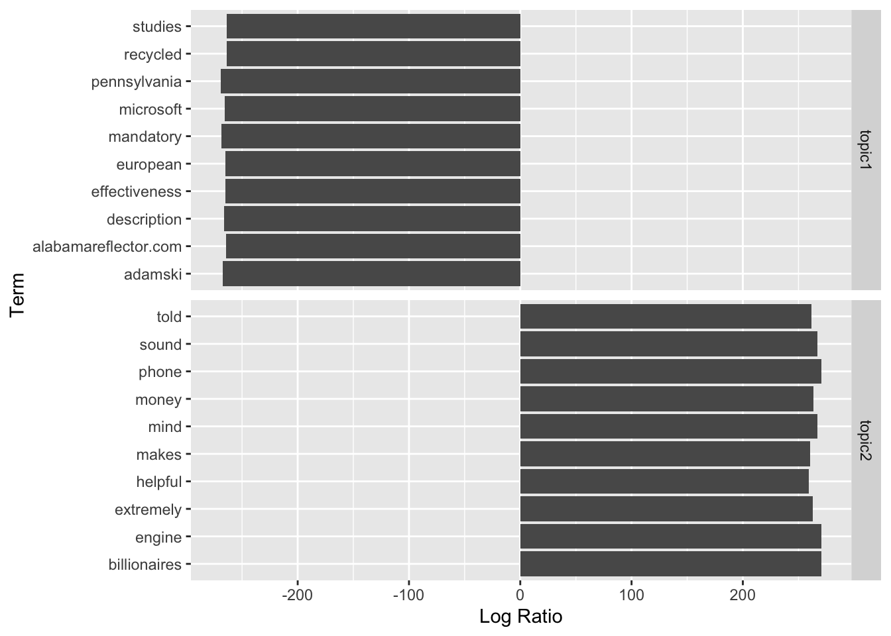
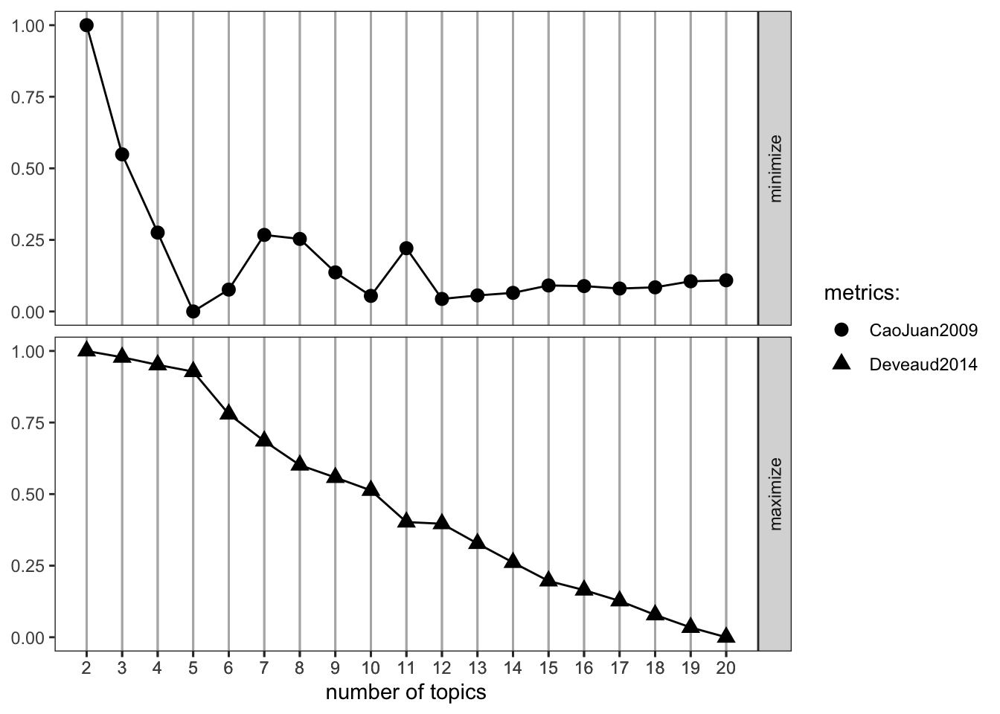
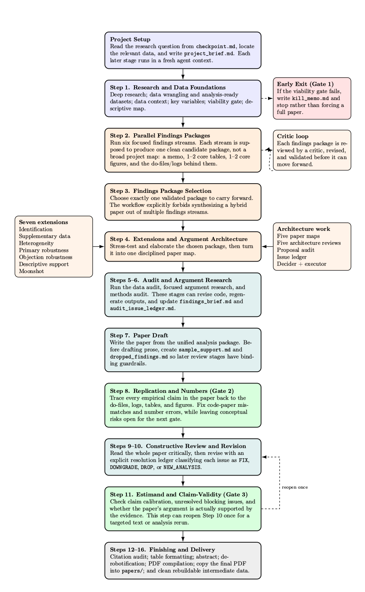
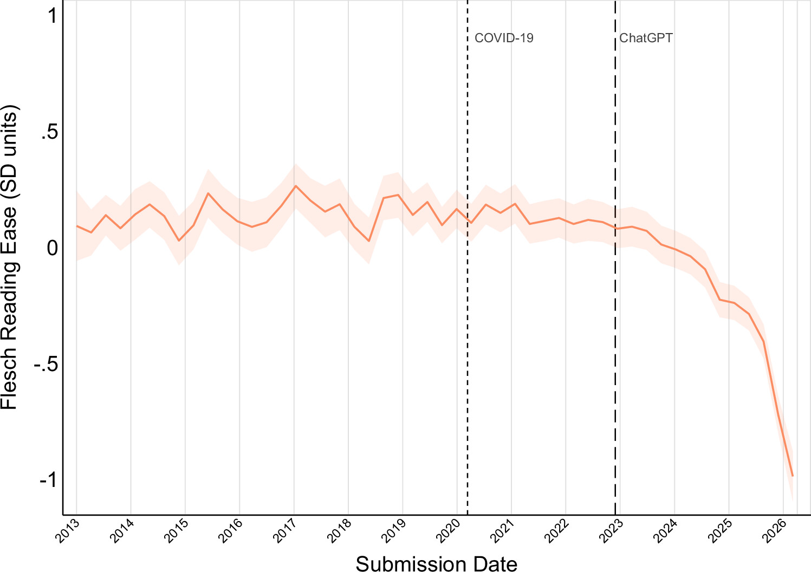

9 Text Analysis Tools, Part 2: Topic Models, Large Language Models, and AI
Last but not least, we will discuss topic models, large language models (LLMs), and the future of computational social science.
Monday Readings:
Wednesday Readings:
9.1 Topic Models
We might be interested in the topics that are discussed within a virtual discussion space. For instance, recalling our Reddit data tools from last week, we might be interested in Reddits that discuss topics like “data centers.” Let’s find some of these subreddits.
library(RedditExtractoR)
# extract comments from these pages
dc_subreddits <- find_subreddits("data center")We see a subreddit called “DataCenterDebate.” Before moving on, it’s helpful (and I would argue, necessary!) to do a detailed reading of some of your data. When we dig into the urls, we see examples like “Lake of the Ozarks residents protest a data center,” “data center tracking map,” and “does anyone live near a data center?” These seem like roughly what we are interested in. Using the url field, we can go to links like this one and do a bit of reading the posts and comments, which might help us form or adjust our hypotheses. We will go ahead and extract the comments and threads from “DataCenterDebate.”
# we can get urls of the data center subreddit
dc_urls <- find_thread_urls(keywords = "data center",
period = "week")
# extract comments from these pages
dc_comments <- get_thread_content(dc_urls$url)
# look at comments
dc_comments$comments
# look at threads
dc_comments$threadsGreat! We can now make our data tidytext, by reshaping it so that each row is just one word. We’ll do this for both comments and threads separately.
library(dplyr)
library(tidytext)
# create a tidytext dataset
tidy_comments <- dc_comments$comments %>%
unnest_tokens(word, comment) %>%
anti_join(stop_words)
tidy_threads <- dc_comments$threads %>%
unnest_tokens(word, text) %>%
anti_join(stop_words)
tidy_threadtitles <- dc_comments$threads %>%
unnest_tokens(word, title) %>%
anti_join(stop_words)We will now count the words in each Reddit post separately. Including url inside the count() parentheses does this.
library(magrittr)
# create counts of each word - we will include id in the count()
# function to also get n values for words in each article
tidy_comments_counts <- tidy_comments %>%
count(url, word, sort = TRUE)
tidy_threads_counts <- tidy_threads %>%
count(url, word, sort = TRUE)
tidy_threadtitles_counts <- tidy_threadtitles %>%
count(url, word, sort = TRUE)
# combine
tidy_counts <- bind_rows(tidy_comments_counts,
tidy_threads_counts,
tidy_threadtitles_counts)
# remove NA values
tidy_counts %<>%
na.omit()Great! Now, to run topic models on our data, we need to put it into a Document-Term Matrix (DTM). The DTM is similar to other tidytext data that we have used, but there are some characteristics that make the DTM unique. Silge and Robinson note that in the DTM:
- Each row represents a document.
- Each variable represents a term.
- Each value contains the number of appearances of the term.
We might intuit that when we create a DTM with many documents and many terms, there will be a large number of 0’s (terms that do not appear in specific documents). This is especially the case when terms are specific and documents are relatively short (for example, we might have songs with different lyrics in each, and many words would appear rarely). When a dataframe or matrix has a low frequency of non-zero values, we call it sparse.
Perfect! Now we have a DTM object that is essentially a matrix with the value of appearances for each word in each document (0’s for most entries).
The method of topic modelling that we will use is called “Latent Dirichlet Allocation,” or LDA. It is the most common form of topic modelling. LDA treats documents as “mixtures” of topics, and topics as “mixtures” of words. Importantly, each of these can be overlapping, such that words can appear in multiple topics and topics can appear in multiple documents.
We can calculate LDA in R using the following code. Importantly, we need to specify the number of topics that we want to use. We’ll start here with two topics, but it’s wise to try different numbers and look at the results under each scenario. Since this is unsupervised learning, remember that there is no “correct” answer, but that some will be better than others. We will also use the control argument to set a seed equal to 1, so that we get the same result every time (otherwise, it could give us a slightly different LDA).
Great! Now that we have a topic model for our data, we just need to get it into a format that we can work with. The tidy() function, as its name suggests, gives us a tidy dataframe. When we input an LDA object into the tidy() function, it gives us \(\beta\) values, which represent the probability that a given word will fall into a given topic. You may need to install the package reshape2 for this code to work:
Now that our data are in a tidy dataframe, we’ll just clean it up a little more so that we can plot it. We will keep the top ten words in each topic, and sort them by their \(\beta\) values.
# format for plot
dc_top_terms <- dc_topics %>%
group_by(topic) %>%
slice_max(beta, n = 10) %>%
ungroup() %>%
arrange(topic, -beta) %>%
mutate(term = reorder_within(term, beta, topic))And lastly, we will plot the topics.
library(ggplot2)
# plot our topics!
ggplot(dc_top_terms, aes(beta, term, fill = factor(topic))) +
geom_col(show.legend = FALSE) +
facet_wrap(~ topic, scales = "free") +
scale_y_reordered()
If we were to label these topics, what we we call them?
Alternatively, we could try plotting the topics in relation to each other. That is, we can take \(log\bigg(\frac{\beta_2}{\beta_1}\bigg)\) to compare the \(\beta\) values for the same word in two different topics. Then we can look at the ten words that are relatively most common in each topic. We will also filter our data to only include words that have \(\beta\) values above 0.001 in at least one topic.
library(tidyr)
beta_wide <- dc_topics %>%
mutate(topic = paste0("topic", topic)) %>%
pivot_wider(names_from = topic, values_from = beta) %>%
filter(topic1 > .001 | topic2 > .001) %>%
mutate(log_ratio = log2(topic2 / topic1))For plotting purposes, we will limit our data to the 10 largest and smallest log ratio values. We will do this by re-assigning beta_wide using the bind_rows() function with two arguments: beta_wide limited to the largest 10 values, and beta_wide limited to the smallest ten values. For each dataframe, we will add a variable called “topic,” which we will call “topic1” for the smallest values (since these are most likely to appear in topic 1) and “topic2” for the largest values (since these are more likely to appear in topic 2).
# limit to 10 largest and smallest log ratios
beta_wide <- bind_rows(
beta_wide %>%
slice_min(log_ratio, n = 10) %>%
mutate(topic = "topic1"),
beta_wide %>%
slice_max(log_ratio, n = 10) %>%
mutate(topic = "topic2")
)Now we can plot our result!
# plot results!
ggplot(beta_wide, aes(x = log_ratio, y = term))+
geom_col()+
facet_grid(rows = vars(topic), scales = "free_y")+
labs(x = "Log Ratio", y = "Term")
Great! From here, we can think more about the divide between Topic 1 and Topic 2. We could even label our topics: for example, “research” and “products.” These labels are far from perfect, but they begin to describe the sets of words that appear in each broad category.
9.2 Documents as Mixtures of Topics
Until now, we have mostly been examining topics as mixtures of words. It makes sense to do this as an initial step: we want to see that our topics can be understood as broad categories and that the words classified under these topics have something in common. But we could also move up a level, examining documents as mixtures of topics.
Here, we are asking what topics our documents - in this case, Reddit comments and threads - are comprised of. We can do this by calculating the \(\gamma\) for the LDA.\(\gamma\) can be interpreted as the “per-document-per-topic probabilities,” which add to 1 for each document. We can think of these as the proportion of each topic within a document.
# calculate gamma for all documents
dc_documents <- tidy(dc_lda, matrix = "gamma")
# view documents
head(dc_documents)## # A tibble: 6 × 3
## document topic gamma
## <chr> <int> <dbl>
## 1 https://www.reddit.com/r/DataCenterDebate/comments/1nd3wze/loca… 1 1.00e+0
## 2 https://www.reddit.com/r/DataCenterDebate/comments/1tfxeep/do_w… 1 1.38e-4
## 3 https://www.reddit.com/r/DataCenterDebate/comments/1ovb4nt/stud… 1 3.56e-4
## 4 https://www.reddit.com/r/DataCenterDebate/comments/1tbhdtx/im_c… 1 1.72e-4
## 5 https://www.reddit.com/r/DataCenterDebate/comments/1thtw5q/do_y… 1 2.22e-4
## 6 https://www.reddit.com/r/DataCenterDebate/comments/1puopiz/trio… 1 2.87e-4Within co_documents, we can search for specific articles and find the topics that they are comprised of. For example:
# examine one article
dc_documents %>%
filter(document == "https://www.reddit.com/r/DataCenterDebate/comments/1nd3wze/local_research_collab_western_pa_pittsburgh/") ## # A tibble: 2 × 3
## document topic gamma
## <chr> <int> <dbl>
## 1 https://www.reddit.com/r/DataCenterDebate/comments/1nd3wze/loca… 1 1.00e+0
## 2 https://www.reddit.com/r/DataCenterDebate/comments/1nd3wze/loca… 2 1.52e-4We see that this article is comprised almost entirely of topic 1. If we look at the post, we can see that it is about Pittsburg’s campaign to be the “AI Capital of the World.”
We can look at other articles that strongly align with just one topic. Specifically, we’ll look at articles that have probabilities of greater than 95% for one topic.
## # A tibble: 92 × 3
## document topic gamma
## <chr> <int> <dbl>
## 1 https://www.reddit.com/r/DataCenterDebate/comments/1nd3wze/local… 1 1.00
## 2 https://www.reddit.com/r/DataCenterDebate/comments/1rpwxti/oracl… 1 0.999
## 3 https://www.reddit.com/r/DataCenterDebate/comments/1rrsezn/seawa… 1 0.999
## 4 https://www.reddit.com/r/DataCenterDebate/comments/1t52n5e/what_… 1 0.999
## 5 https://www.reddit.com/r/DataCenterDebate/comments/1neukud/does_… 1 1.00
## 6 https://www.reddit.com/r/DataCenterDebate/comments/1ntfw2v/the_d… 1 1.00
## 7 https://www.reddit.com/r/DataCenterDebate/comments/1rle69u/resea… 1 0.999
## 8 https://www.reddit.com/r/DataCenterDebate/comments/1rzvevk/can_d… 1 0.998
## 9 https://www.reddit.com/r/DataCenterDebate/comments/1ncyygw/how_t… 1 1.00
## 10 https://www.reddit.com/r/DataCenterDebate/comments/1sjj88d/data_… 1 0.997
## # ℹ 82 more rows# within this set, we can examine which articles are about topic 1 vs 2
dc_documents %>%
filter(gamma > 0.95) %>%
select(topic) %>%
table()## topic
## 1 2
## 38 54We see that 38 posts are more related to topic 1, while 54 posts are more closely related to topic 2.
9.3 Choosing \(k\) Values
Perhaps the most important decision we can make in topic modelling is the \(k\) value for our model. If \(k\) is too large, we’ll end up with a lot of topics that don’t make any sense, and if \(k\) is too small, we’ll end up with lots of different themes in the same topics. While one can inductively explore various options, there are also formalized ways to search for optimal \(k\) values.
Regardless of our method for choosing \(k\), we should always make sure that our models align with our human validation of what topics make sense. That is, we shouldn’t rely solely on our output metrics to make decisions about our data, we should also incorporate the knowledge that we have about our sources and our goals.
There are a few ways that we can search for optimal \(k\) values. We’ll start by looking at the FindTopicsNumber function from the ldatuning package. We’ll try searching for topics within the range of 2-20, and using two methods - (Cao & Juan, 2009) and (Devaud, 2014). The package includes two other methods - (Griffiths, 2004) and (arun, 2010) - which you may want to inspect as well, especially if there is uncertainty between the first two.
#library(ldatuning)
# create models with different number of topics
result <- FindTopicsNumber(
dc_dtm,
topics = seq(from = 2, to = 20, by = 1),
metrics = c("CaoJuan2009", "Deveaud2014"),
method = "Gibbs",
control = list(seed = 3),
verbose = TRUE
)## fit models... done.
## calculate metrics:
## CaoJuan2009... done.
## Deveaud2014... done.The ldatuning package also includes a function for visualizing the results:

As noted in the above figure, we want to minimize the (Cao, Juan 2009) estimator while maximizing the (Deveaud, 2014) estimator. Therefore, we might want to explore running our models with 5 topics. From this point, we would want to re-run our topic models at this values and manually inspect the results. In the Problem Set, you’ll have a chance to try 5 topics.
Lastly, I want to note that Structural Topic Models are an alternative to LDA, which incorporate article-level metadata in their topic modelling. The stm R package has many wonderful features for text processing, finding topics, and creating visualizations. I recommend exploring this vignette if you wish to deepen your understanding of topic models!
9.4 Large Language Models
Large Language Models, or LLMs use large text datasets and deep learning (or other algorithm models) to generate text based on predictions. It is important to note that the text output from LLMs are based on these predictive models, which are generally opaque and do not use logic or reasoning (as we covered in Prediction and Machine Learning. As Hanna and Bender write:
“these systems do not understand anything. Rather, they turn technology meant for classification inside out: instead of indicating whether an image contains a face or accurately transcribing speech, generative AI tools use these models to generate media. They may create text which appears to human eyes like the result of thinking, reasoning, or understanding, but it is in fact anything but.”
Similarly, Veerle Eeftink and Van Leemput note, LLMs are not “thinking” or using logic in the way that humans do. Instead, they are predicting words based on very large databases of prior written language. This can lead to “hallucinations” where LLMs give incorrect information. There is no way to totally fix this problem, although researchers can build checks and safeguards into their LLM usage.
People use LLMs for a range of writing tasks, coding tasks, and other creative endeavors. As LLMs have gained traction in society, people have used them for an increasingly wide range of tasks. Recently, sociologists Engzell and Wilmers even used LLM prompts to write entire sociology papers. While a single LLM is unlikely to be able to write a coherent research paper, Engzell and Wilmers find that a multi-agent approach, in which some “agents” (or LLMS) take on tasks like coding and data analysis while others take on tasks like robustness checks and writing, is able to do a much better job. The multi-agent workflow also helps minimize issues like hallucinations.

Figure 9.1: Source: Engzell and Wilmers, 2026
So, how good are the papers that can be generated by this process? The authors note that “none are publishable as-is.” However, they also say that there are some they would send out for peer-review. All of the papers generated clean code and detailed documents explaining decisions (even if the decisions are not always what the authors would do). The papers struggle with framing and engaging deeply with specific literatures while also making arguments of broad interest. The papers also struggle with “coherence:” the data and methods sections, in the authors’ view, were often difficult to follow.
The authors note that “review processes” (i.e. some agents reviewing the work of others) would help to improve papers, these reviews sometimes degraded paper quality. Agents sometimes over-interpreted robustness checks or created larger problems by trying to address a smaller issue. In future workflows, it is possible that human checkpoints could help to mitigate some of these concerns.
In the end, this demonstration of LLM-generated sociology papers might lead to more questions than answers. Could LLMs provide tools to expand our analyses, make them more reproducible, and to generate locality-specific conclusions of our findings? In the process of instructing LLMs to write papers, will we codify the research process more clearly than has been done before, potentially helping to de-mystify academia? How will these tools influence inequality between researchers and between institutions?
LLMs also have implication for social biases and inequalities. To explore how LLMs might reflect certain populations more than others, researchers have asked who LLMs sound like. In one study, researchers test LLMs in college application prompts and compare these to actual college application essays from real high schoolers. The researchers find that LLMs tend to take on the speech patterns of “males with higher levels of social privilege.”
Another implication that is clear is that the amount of papers produced by researchers is likely to increase. SocArxiv, a hosting site for sociology working papers, has been inundated with new submissions in recent years, including “a large volume of AI-generated slop papers.” The editors decided to impose a 90 day moritorium on all new AI-topic submissions in November 2025. Gartenberg and colleagues, the editors at Organizational Science, found that writing quality (at least, measured via the Flesch Reading Ease score) in submitted papers has declined sharply since the popularization of ChatGPT. It is possible that this deluge of mediocre (or worse) AI-generated papers will force the discipline to make other changes in the peer review process, and broadly, in how we value outputs like papers.

9.5 Problem Set 9
Recommended Resources:
Text Mining in R: A Tidy Approach. Chapter 6: Topic Modeling
Start a new document, problemset9.Rmd, in your soc10problemsets repository. (You can download a template here, but be sure to save it in your own soc10problemsets repo).
RedditExtractoRto download Reddit comments and threads on data centers. Create a topic model from the subreddit “DataCenterDebate” using \(k\) = 5, and show a figure with the 10 relative most common words in each topic. Commit your changes.Describe the topics that you found in question 1. How do these compare to the topics in the \(k\) = 2 case (in section 9.1), and how well do these describe your data? Commit your changes.
Create an account in Claude or ChatGPT (or both). The free versions are sufficient! Ask your LLM to write R code that downloads Reddit data, models topics (any number) and describes these topics. List the prompts that you used, your impressions of the results, and how these differed (or didn’t differ) from your responses to questions 1 and 2. Commit your changes.
Considering Engzell and Wilmers’ multi-agent workflow, try to improve your Claude modelling process (you might not be able to set up a true multi-agent workflow in the free versions, but you could simulate this by giving your LLM instructions to review or improve the existing output in specific ways, having ChatGPT review the Claude code or vice versa, etc.). Explain what you tried (including additional prompts), how your results changed (or didn’t change), and whether this improved your understanding of the data or not. Commit your changes.
Consider how LLMs (specifically, their ability to write large amount of text and code with a single prompt) will change the social sciences. Will this technology free up researchers to pursue bigger ideas, or will it lead to “mediocrity at scale?” What do you see as the most important opportunities and challenges related to LLMs in the social sciences? (Please refrain from using your LLM to write your answer - I want to know your thoughts!). Commit your changes.